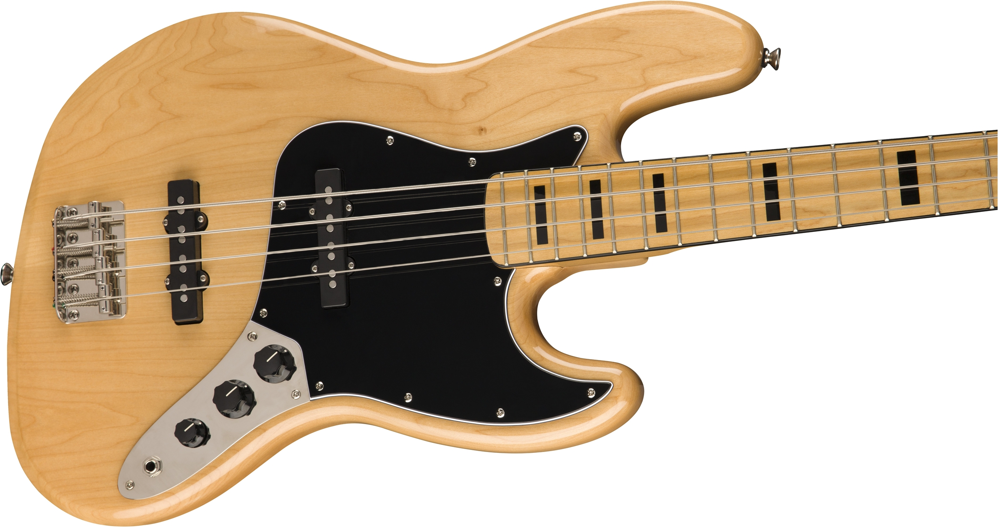

I turn visions into real products and services.
Contact me on jsmithtid@outlook.com
I've been a product designer for over 18 years, not including a PhD that intersected across several fields: Human-computer interaction, information retrieval and natural language processing.
I played bass in a band when I was 16 and all we achieved was making a noise. I still sometimes make my own music which is way easier now than it's ever been. At home, I enjoy videography and am inspired by filmmakers like John Sayles, Andrei Tarkovsky and Terrence Malick. Spending time with my family (I am definitely a proud dad) takes up most of my free time and I sometimes write statistics algorithms for fun. I guess I like the challenge of a hobby where I know I can be right whereas work is a little more subjective.
My career has taken me to some wonderful places and amazing teams but I'm still learning. My latest focus is on growth driven design which I'm putting into practice for a client, Phuket Shooters, a small company running a shooting range in Thailand. It's smaller than my usual client but it's given me a great opportunity to do controlled studies and refine my skills.
